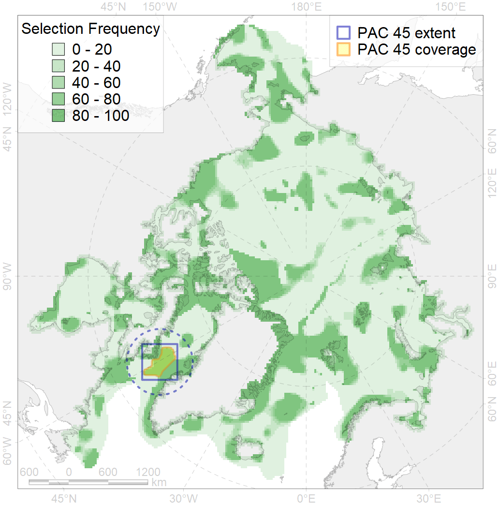
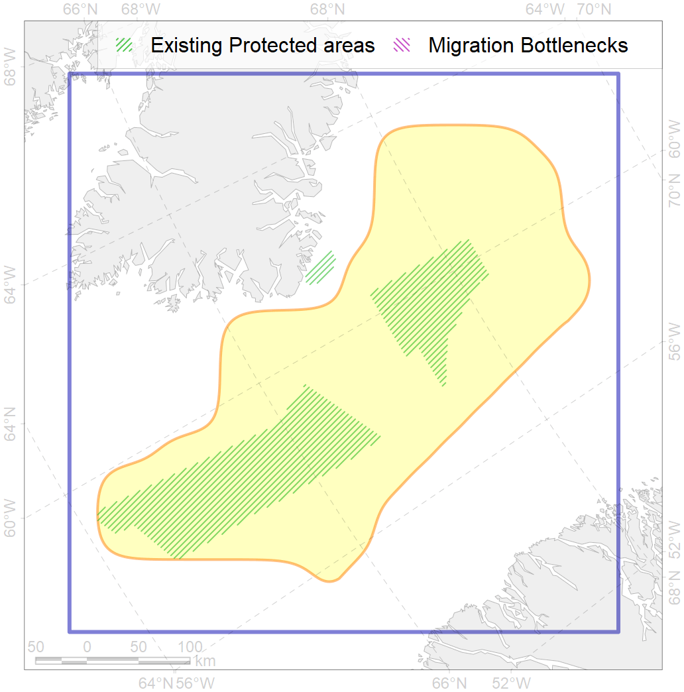

45
For more information regarding this PAC and to conduct custom spatial analysis using the PAC data or any spatial query, please consult Accenter.

0
CFs entirely within the PAC area
5
CFs at least 25% within the PAC area
6
CFs with at least 50% of their target achieved in the PAC
16
CFs with at least half of their target achieved in the PAC
| CF ID | CF Name | Proportion in the PAC | Conservation Target | Contribution to ArcNet Target Achievement | PAC’s Contribution to the Achieved Target |
|---|---|---|---|---|---|
| 5071 | Narwhal Admiralty Inlet stock winter core distribution | 72.0% | 72.0% | 96.4% | 96.1% |
| 5086 | Narwhal Melville Bay stock winter core distribution | 60.8% | 72.0% | 81.7% | 76.8% |
| 5078 | Narwhal Eclipse Sound stock winter core distribution | 54.5% | 72.0% | 72.7% | 70.5% |
| 7155 | III.4.2. Southwest Greenland slope | 47.4% | 15.3% | 301.3% | 76.7% |
| 7052 | cold corals of Canada and Western Greenland | 34.8% | 50.0% | 69.2% | 46.0% |
| 5115 | Narwhal wintering areas | 24.8% | 24.0% | 98.3% | 49.9% |
| 7154 | III.4.1.2. SW Greenland glacial troughs | 23.4% | 16.6% | 139.9% | 24.2% |
| 2027 | Hooded seal foraging areas | 16.7% | 38.4% | 40.7% | 35.5% |
| 5102 | Bottlenose whale summer feeding areas in the Northwest Atlantic | 16.6% | 12.0% | 137.4% | 45.3% |
| 7146 | III.2.2.1. Archipelago slope in Baffin Bay and Lancaster Sound | 15.2% | 5.5% | 267.2% | 34.9% |
| 2021 | Harp seal foraging areas in the Baffin Bay region | 14.6% | 24.0% | 57.0% | 26.7% |
| 5042 | Bowhead whale winter concentrations in the Baffin Bay | 13.2% | 48.0% | 26.6% | 18.1% |
| 5038 | Blue whale summer feeding areas in the Northwest Atlantic | 11.1% | 25.2% | 43.0% | 27.3% |
| 2044 | Ringed seal whelping areas in the Baffin Bay region | 11.0% | 24.0% | 43.2% | 21.0% |
| 7259 | SW Greenland Bank | 10.4% | 70.0% | 14.8% | 10.4% |
| 5103 | Bowhead whale Baffin population spring-autumn distribution | 9.7% | 24.0% | 38.2% | 20.9% |
| 6034 | Ivory gull (Pagophila eburnea) Atlantic wintering grounds | 9.6% | 21.6% | 42.0% | 21.0% |
| 6041 | Ivory gull (Pagophila eburnea) postbreeding grounds in the Canadian Arctic | 8.8% | 21.6% | 38.9% | 15.1% |
| 9002 | polar bear of the BB (Baffin Bay) subpopulation distribution | 8.6% | 32.4% | 25.0% | 20.6% |
| 5104 | Bowhead whale Baffin population winter distribution | 8.6% | 24.0% | 33.1% | 16.4% |
| 9005 | polar bear of the DS (Davis Strait) subpopulation distribution | 8.4% | 32.4% | 23.1% | 17.2% |
| 7142 | III.2.1.1. Baffinian shelf | 7.5% | 6.8% | 93.8% | 13.0% |
| 3034 | Marginal Ice Zone distribution in July in the Baffin Bay LME | 6.5% | 24.0% | 24.7% | 10.2% |
| 7153 | III.4.1.1. SW Greenland medium and low profile shelf | 6.1% | 11.5% | 47.5% | 6.8% |
| 4056 | Distribution of the American Plaice (Hippoglossoides platessoides), European populations | 5.9% | 3.0% | 185.6% | 11.8% |
| 4085 | Fish zoogeography, Arctic Region, Subarctic Transitional-Atlantic Province, Labrador – S Greenland District | 5.5% | 8.6% | 60.0% | 12.6% |
| 4048 | Feeding/nursery area of the ogac (Gadus ogac ) | 4.9% | 12.0% | 38.0% | 9.5% |
| 4032 | Range of the Arctic skate (Amblyraja hyperborea) | 3.3% | 3.0% | 104.8% | 8.0% |
| 6049 | Black-legged kittiwake (Rissa tridactyla tridactyla) wintering grounds | 2.9% | 32.4% | 8.6% | 8.6% |
| 2019 | Harbour seal range in the North Atlantic region | 2.7% | 6.0% | 40.7% | 6.2% |
| 5112 | Arctic Cetaceans (beluga, bowhead, narwhal) winter habitats as predicterd by MIZ | 2.6% | 40.0% | 6.3% | 5.2% |
| 4046 | Range of the Thorny Skate (Amblyraja radiata) | 2.6% | 7.2% | 33.4% | 6.2% |
| 4059 | Range of the Greenland Halibut (Reinhardtius hippoglossoides) | 2.3% | 3.0% | 71.6% | 6.0% |
| 4045 | Feeding/migration area of the Pink Salmon (Oncorhynchus gorbuscha), native distribution | 2.2% | 6.0% | 34.6% | 5.6% |
| 6083 | Thick-billed murre (Uria lomvia lomvia) wintering grounds | 2.1% | 24.0% | 8.2% | 5.7% |
| 6002 | Little Auk (Alle alle alle) winetring grounds | 2.0% | 24.0% | 7.8% | 5.4% |
| 6023 | Atlantic puffin (Fratercula arctica naumanni) wintering grounds | 1.9% | 24.0% | 7.5% | 6.1% |